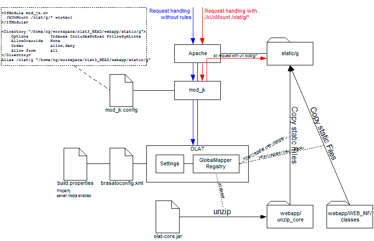

To deliver static files that are part of the application brasato offers two concepts. Both are implemented using the brasato dispatcher interface:
The first mechanism is used to embedd general framework resources, e.g.
css files, themes and basic javascript files. Those files are normally
embedded directly in body.html. Those files are deliverd using the
StaticMediaDispatcher class.
The second mechanism is used to embedd component based resources, e.g. some js code, images or css classes only used by a certain component. The component can be part of the brasato framework, be in the application sourcecode or even aded to the application as a jar.
Those resources are delivered using the ClassPathStaticDispatcher
Files delivered by the the StaticMediaDispatcher or the ClassPathStaticDispatcher always have the same URL to make those file cachable by the browser. Since those files don't change between releases, it's entirely up to the browser how to cache them. OLAT implements the last-modified date to optimize browser or proxy server caching of those files.
However, to force users to reload all resources after a new release, the path contains the application version flag. Thus, after a new release, all resources will be loaded from scratch by all browsers. This mechanismus is implemented transparently, you don't have to take care about it.
<IfModule mod_jk.c>
JkUnMount /olat/raw/* worker1
</IfModule>
<Directory "/home/cg/workspace/olat3_HEAD/webapp/static/">
Options Indexes IncludesNoExec FollowSymLinks
AllowOverride None
Order allow,deny
Allow from all
</Directory>
Alias /olat/raw/VERSIONID "/home/cg/workspace/olat3_HEAD/webapp/static/"
See olat/conf/httpd.conf for an example
While the delivery of static resources via the dispatchers described above is a service infrastructure of the framework, the mapper comes in place when you want to have control over the delivery process (e.g a protected resource) or the delivered files are generated on the fly (e.g. an excel file download).
Mappers must be registered using the mapper registry or the global mapper registry. The difference between global and normal is that globals mappers have a global mapper name based on the class that registered for the mapper. Thus, the global mapper will always have the same URL and can be cached by the browser. Global mappers are shared between all users. Make sure you implement a proper last-modified in the resources you deliver via global mappers!
The normal mapper registry registers for user session based mappers. The life-time of such mappers is bound to the user session.
Make sure you unregister the mappers you register. Use the BasicController to work with mappers and use the convenience methods there to register mappers
Note that global mappers don't need to be unregistered. They are registered only once in a class and cleaned up when the applicatoin shuts down.
